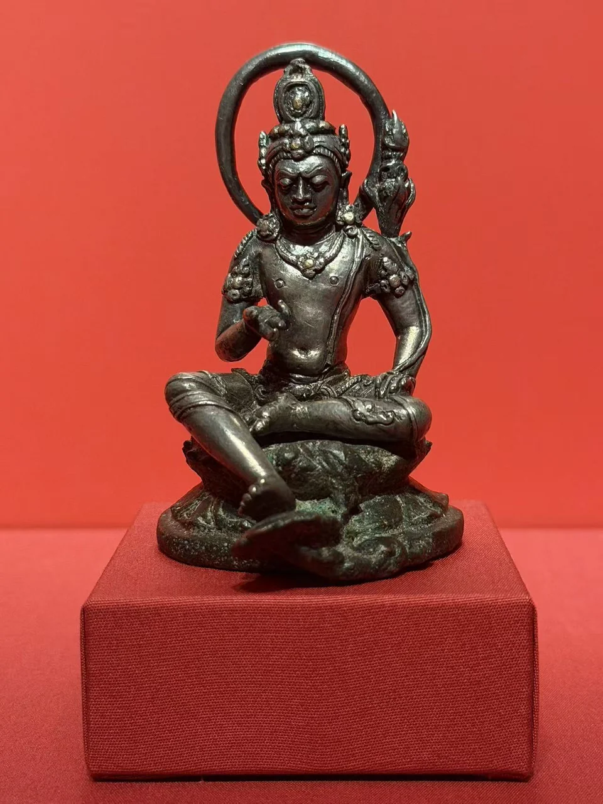
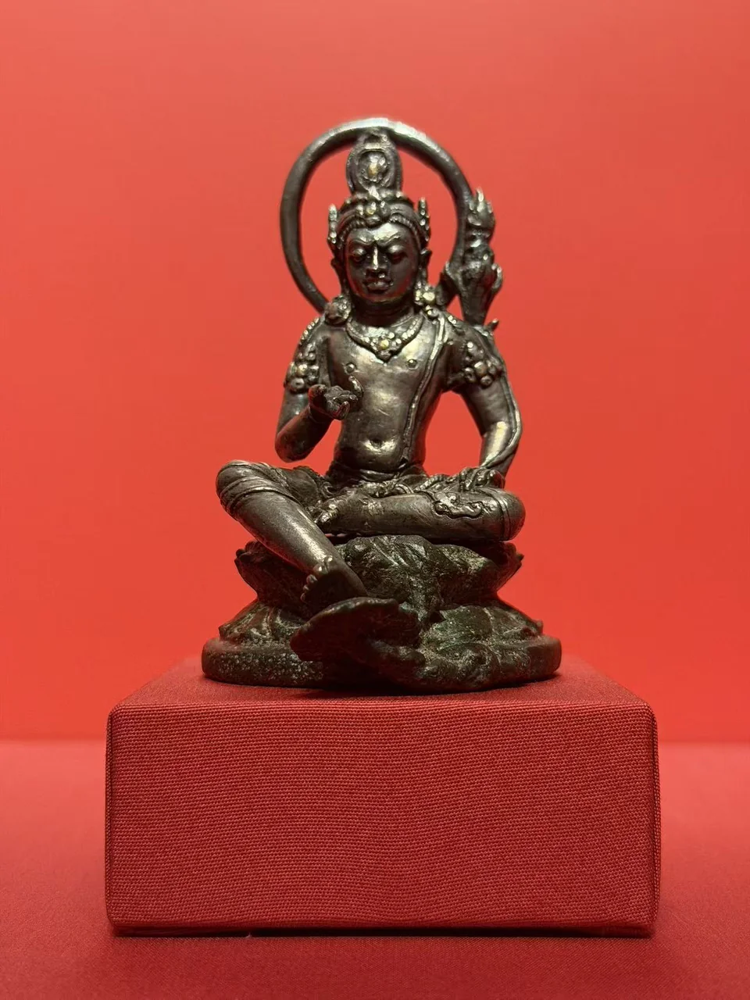
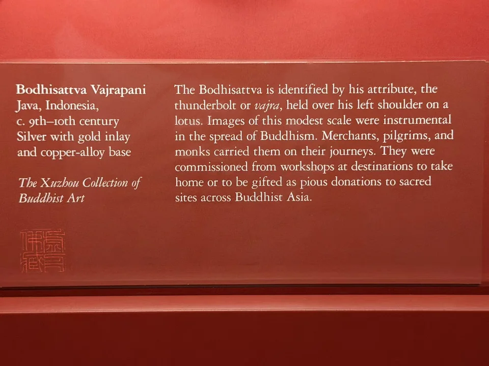

THE XUZHOU COLLECTION
金刚手菩萨
Bodhisattva Vajrapani
肩侧莲花上的金刚杵，藏在精巧的轮廓里。

- 地区
- 爪哇，印度尼西亚
- 年代
- 约9—10世纪
- 材料
- 银、嵌金；铜合金底座
- 收藏
- 虚舟收藏（私人收藏）
- 观看地点
- 休斯顿美术馆（MFAH）
作品札记
一腿盘起，一腿斜垂，背后的圆形头光与竖起的莲茎把身体围住。莲花上方的小型金刚杵，是辨认金刚手菩萨的关键；冠饰、项链与臂钏又使上半身比衣裙更繁密。
馆方记录这件爪哇造像以银制成、嵌金，底座为铜合金。三种金属的关系不宜全归成“鎏金铜像”：银构成像身，金用于镶嵌，座又是另一种合金。它与旁边的青铜阿弥陀佛同属爪哇传统，却在姿态和材料上形成很好的对照。
其他角度与细部


现场展签与原始记录

- 题名
- Bodhisattva Vajrapani
- 地区
- Java, Indonesia
- 年代
- c. 9th–10th century
- 材料
- Silver with gold inlay and copper-alloy base